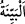

“Rabb’i tarafından (gelmiş) açık bir delile dayanan…”
“” huccet ve burhan (delil) demektir. Mânâ şöyledir: Yaptığı ve terk ettiği her
konuda doğru ve gerçeğe delâlet eden Rabb’i tarafından sâbit olan bir delil üzere
bulunan -ki ihlâslı her mü’min böyledir-, hiç delili olmayan ile eşit olur mu? Tabii ki
birinciler saâdet ve güzel âkıbet, ikinciler ise şakâvet ve kötü son üzeredirler.
“ve onu” bu aklın delilini “Rabb’inden” onun doğruluğuna delâlet eden “bir
şâhidin” yâni Kur’an’ın “izlediği, ayrıca kendisinden önce” yani şâhid olan
Kur’an’dan önce “bir önder” dinî hususlarda uyulan ve önder kabul edilen bir kitap
“ve bir rahmet olarak” yâni, Kur’an-ı Azîm ile te’yid edilip devam eden hükümleri
itibariyle ilk indirildiği kimselere ve kıyamete kadar onlardan sonra gelecek olanlara
büyük bir nimet olarak “Musa’nın Kitab’ı” yâni Tevrat elinde “bulunan kimse
(inkârcılar gibi) midir?” Çünkü Tevrat da tasdik konusunda bu delili takip etmektedir.
İnsânü’l-uyûn’da denilir ki: “Tevrat, hüküm ve kanun ihtivâ eden ilk ilâhî kitaptır.
Önceki kitaplar ise bunun aksine böyle hüküm ve kanunlar ihtivâ etmezler. Onlar sadece
Allah’a ve Allah’ın birliğine îmân etme konusunu ihtivâ ederler. Bu sebeple onlara
“suhuf/sahifeler” denilmiştir. Onlara ‘kitap’ denmesi mecâzdır.”
“Çünkü bunlar” yani delili bulunanlar “ona” Kur’an’a “iman ederler” yani onu
doğrularlar. “Zümrelerden” Mekkeliler’den ve Peygamber (a.s.)’a karşı onların
tarafında yer alan, yâni bir araya gelenlerden “hangisi onu” Kur’an’ı “inkâr ederse
işte cehennem ateşi onun varacağı yerdir.” yani varacağı vaad edilen yerdir. Ateşin
“vaad edilen yer” kılınmasında orada bu kişilere anlatılmasına imkan olmayan türlü
azablar olduğuna işaret vardır.
“Bundan şüphen olmasın.” Kur’an ve onun Allah tarafından geldiği konusunda hiç
şüphen olmasın. “Zira bu,” seni dinî ve dünyevî konularda terbiye eden “senin
Rabb’in tarafından bildirilmiş gerçektir; fakat insanların çoğu” onun kendisinde
şüphe olmayan bir hakikat olduğuna “inanmazlar.” Bu, ya düşüncelerinin yetersiz ve
fikirlerinin bozuk olduğundan ya da inatlarından ve kendilerini büyük görmelerinden
ileri gelmektedir. Bu mânâ Kâdî Beydâvî’nin tercih ettiği ve müfessirlerin çoğunun da
ona uyarak benimsediği mânâdır.
Ebu’s-Suûd Efendi ise el-İrşad’da özetle şöyle der: “ ”den maksad İslâm’ın
”den maksad İslâm’ın
gerçek olduğuna delâlet eden burhandır ki o Kur’an’dır. “Allah tarafından gelen bir
delil üzere bulunmak” ise bu delile sıkıca yapışmaktan ibarettir. Onu Kur’an’dan olan,
onun Allah tarafından geldiğine şâhidlik eden bir şâhid takip eder. Bu şâhid Kur’an’ın
i‘câzı ve onda geçen gaybe dâir haberlerdir. Yahut Kur’an’ı, Hz. Peygamber (s.a.)’in
ellerinde ortaya çıkan mûcizeler gibi Allah tarafından olan bir şâhid tâkip eder. Şâhidin
delili takip etmesinden maksad, hiçbir durumda ondan ayrılmayacak şekilde ona tâbi bir
halde onun doğruluğuna ve Allah tarafından geldiğine şâhidlik etmesidir. Çünkü Kur’an,
kendisi hakkında şâhidlik eden şâhidi ile birlikte her mü’min ve kâfir nezdinde kıyamete
tadar bâki kalacak bir delildir.